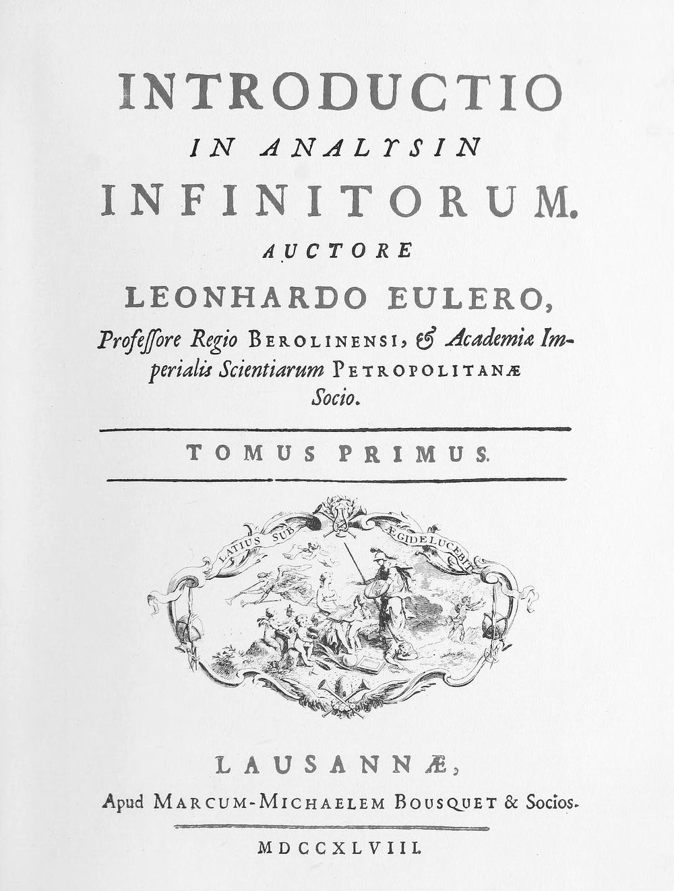
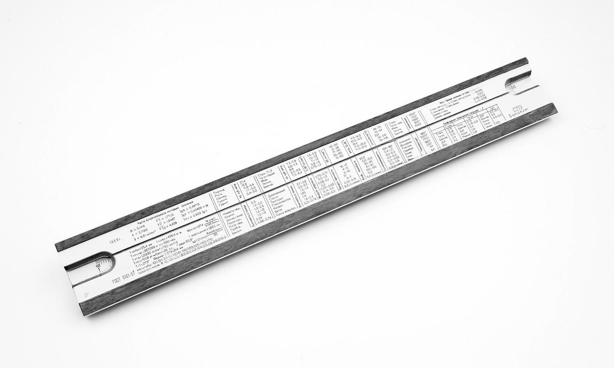
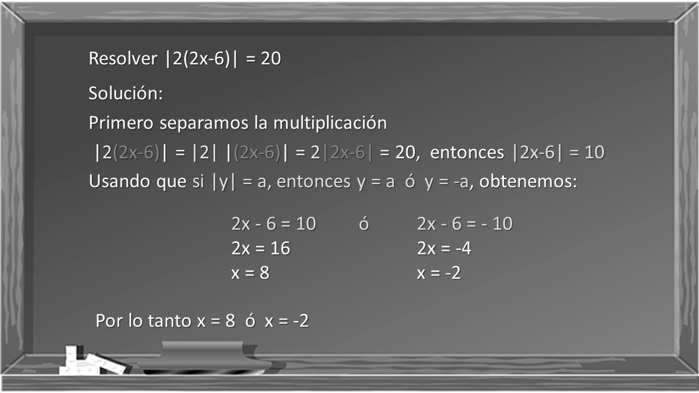

期中要考的
都在这里
期中复习站：微积分 A1 到 4.3 节泰勒公式，线性代数到向量组的秩之前。100 道题带解析，7 篇要点，10 套真题索引。
已做 0 / 100 · 按 / 在题库里搜
范围
按课本目录排。灰掉的是期中之后才考的章节；「已做」跟着你的进度变。
输入一个词，下面这张表会告诉你它落在哪一章、考不考。
微积分 A1
第 1 章 – 第 4.3 节
| 章 | 内容 | 范围 | 题 | 已做 | 要点 |
|---|---|---|---|---|---|
| 1 | 实数系与实数列的极限 1.1 1.2 1.3 1.4 1.5 | 在范围内 | 12 | 0/12 | 读 |
| 2 | 函数 函数的极限与连续 2.1 2.2 2.3 2.4 2.5 2.6 | 在范围内 | 12 | 0/12 | 读 |
| 3 | 函数的导数 3.1 3.2 3.3 | 在范围内 | 11 | 0/11 | 读 |
| 4 | 导数应用 4.1 4.2 4.3 | 在范围内 | 15 | 0/15 | 读 |
| 5 | 黎曼积分 | 期中之后 | — | — | — |
| 6 | 广义黎曼积分 | 期中之后 | — | — | — |
| 7 | 常微分方程 | 期中之后 | — | — | — |
在范围内 4 章 · 期中之后 3 章（灰）
线性代数
第 1 章 – 第 3 章「向量组的秩」之前
| 章 | 内容 | 范围 | 题 | 已做 | 要点 |
|---|---|---|---|---|---|
| 1 | 线性方程组与行列式 1.1 1.2 1.3 1.4 | 在范围内 | 18 | 0/18 | 读 |
| 2 | 矩阵 2.1 2.2 2.3 2.4 2.5 | 在范围内 | 18 | 0/18 | 读 |
| 3 | n 维向量空间 3.1 3.2 3.3 | 在范围内 | 14 | 0/14 | 读 |
| 4 | 向量组的秩之后 | 期中之后 | — | — | — |
在范围内 3 章 · 期中之后 1 章（灰）
先做这几道
每章一道，难度从常规到综合，都是卷面上最常见的形状。
速查与投稿
考前十分钟能扫完的那一页，和一道题从写下来到进题库的三步。
材料
考的东西都有出处。四张纸，出处与许可在关于页。


